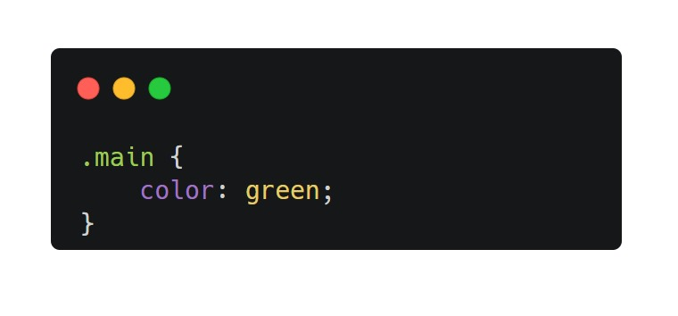

HTML, CSS, dan JavaScript: Konsep Dasar Pengembangan Web
Pernah melihat situs seperti Detik, Kompas atau artikel lainnya? Situs-situs ini sering kali memukau kita dengan fitur canggih seperti berita terbaru yang selalu diperbarui, menu navigasi yang mudah digunakan, hingga desain responsif yang tetap terlihat menarik di perangkat apa pun. Penasaran bagaimana cara membuatnya? Pada artikel ini, kita akan menjelajahi dasar-dasar pengembangan web dengan mempelajari tiga teknologi inti dalam pengembangan web yaitu: HTML, CSS, dan JavaScript.
Apa Itu HTML ?
HTML (HyperText Markup Language) adalah bahasa markup yang digunakan untuk membuat struktur dasar sebuah halaman web. HTML memungkinkan pengembang untuk menentukan elemen-elemen seperti judul, paragraf, gambar, tautan, tabel, dan lainnya. Jika diibaratkan manusia HTML sama seperti dengan kerangka tubuh
Contoh Kode HTML :
Apa Itu CSS ?
CSS (Cascading Style Sheets) adalah bahasa yang digunakan untuk mengatur tampilan dan gaya sebuah halaman web. CSS memungkinkan pengembang untuk menentukan warna, font, tata letak, dan elemen visual lainnya. Jika diibaratkan dengan manusia CSS sama seperti dengan pakaian yang digunakan
Cara Menggunakan CSS pada HTML :
Dalam praktiknya penggunaan css pada html ada beberapa cara, antara lain INLINE, INTERNAL, EXTERNAL
1. INLINE
pada kasus ini kita menggunakan atribut style di dalam tag html
2. INTERNAL
pada kasus ini kita menggunakan tag style di dalam tag html
3. EXTERNAL
pada kasus ini kita menggunakan tag link untuk menghubungkan file CSS
Contoh selektor dalam CSS :
1. Selektor Elemen
Pada situasi ini maka seluruh elemen yang memiliki Tag "P" akan berubah menjadi biru
2. Selektor ID
Pada situasi ini maka seluruh elemen yang memiliki ID "header" akan memiliki warna background gray
3. Selektor Class
Pada situasi ini maka seluruh elemen yang memiliki Class "main" akan berubah menjadi hijau
Apa Itu JavaScript ?
JavaScript adalah bahasa pemrograman yang digunakan untuk membuat halaman web menjadi lebih interaktif. Dengan JavaScript, pengembang dapat menambahkan fitur seperti validasi formulir, animasi, kontrol multimedia, dan banyak lagi. Jika diibaratkan dengan manusia JavaScript sama seperti dengan otak yang mengatur seluruh tubuh
Cara Menggunakan JavaScript pada HTML :
Dalam praktiknya penggunaan JavaScript pada html ada beberapa cara, antara lain INLINE, INTERNAL, EXTERNAL
1. INLINE
pada kasus ini kita menggunakan atribut onclick di dalam tag html
2. INTERNAL
pada kasus ini kita menggunakan tag script di dalam tag html
3. EXTERNAL
pada kasus ini kita menggunakan properti src untuk menghubungkan file JavaScript